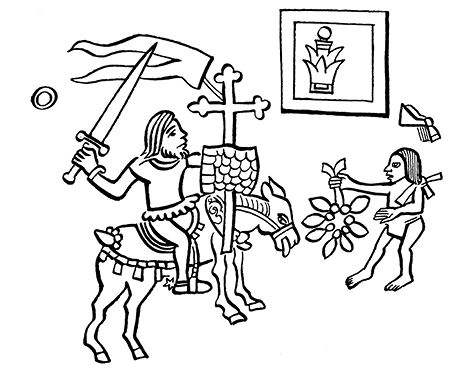
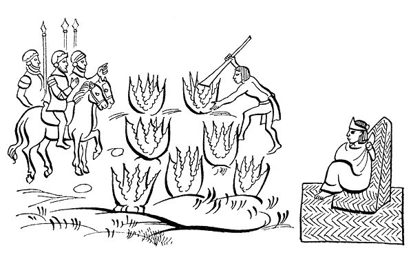
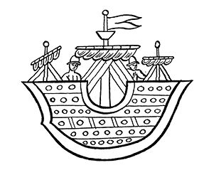

第七章 伊斯特利尔索奇特尔王子
善意地接待西班牙人
导 言
西班牙人过了火山，直奔特拉尔马纳尔科，他们准备从该地再往墨西哥-特诺奇蒂特兰开拔。据《拉米雷斯抄本》记载，西班牙人下山后不久，特斯科科的国王卡卡马特辛的兄弟伊斯特利尔索奇特尔王子就率众前来迎接科尔特斯，并向他求和。
《拉米雷斯抄本》仅保存了古印第安人最早记述的一些片段，整个抄本现在已经佚失。抄本中写道：由于伊斯特利尔索奇特尔王子的努力，特斯科科人从那时起便很顺利地加入了征服者的队伍。还写道：就在那时科尔特斯访问了特斯科科。很多其他史料对这一点颇有争论。无论贝尔纳尔·迪亚斯·德尔·卡斯蒂略、萨阿贡实情提供者还是费尔南多·德·阿尔瓦·伊斯特利尔索奇特尔本人都没在其作品中提到科尔特斯对特斯科科城这次最早的访问，但他们都提到了西班牙人向伊斯塔帕拉帕进军一事，从那里他们最终进入了墨西卡人的首都。
但是无论如何，《拉米雷斯抄本》给我们提供了一些有趣的史实，例如：西班牙人在邀伊斯特利尔索奇特尔的母亲、印第安妇女亚克特辛改信宗教时，她反应强烈。她回答儿子说：“你一定是疯了，怎么能那么快就向那几个野蛮的征服者认输？”
与此同时，在墨西哥-特诺奇蒂特兰，当蒙泰古祖玛获悉征服者已经到达特斯科科附近时，最后一次召见他的部下，与他们商讨是否该心平气和地欢迎外来人。但是鉴于古伊特拉瓦卡特辛不祥的预兆，蒙泰古祖玛还是不得不和平地迎接西班牙人的到来。
征服者向特斯科科进军
（古印第安记述片段的西班牙语版）
西班牙人看到山下住满了居民，感到十分高兴。有人认为他们应该回到达尔斯卡兰招募更多的兵员。但是科尔特斯鼓励他们，叫他们不要害怕。于是他们便开始向特斯科科进军。夜里他们在山区过夜。第二天继续前进。走了一里格多一点儿，伊斯特利尔索奇特尔和他的兄弟在众人的陪伴下也来到了同一个地方。一开始科尔特斯有所疑虑，但后来在打手势和翻译帮助下明白了他们为和平而来，于是便高兴起来。众人靠近这些基督徒，基督徒指了指队长科尔特斯所在的地方，于是伊斯特利尔索奇特尔高兴地走上前去，以自己的方式问候科尔特斯，科尔特斯也用自己的方式向他问候。伊斯特利尔索奇特尔看到科尔特斯如此白皙且蓄着大胡子，风度翩翩，表情庄重，讶异万分。科尔特斯也注视着他和他的弟兄，特别是特克柯尔特辛，这人比西班牙人还要白皙。
最后，通过通译马林娜和阿吉拉尔的翻译他们请科尔特斯前往特斯科科，在那里将向他赠送礼物并款待他。科尔特斯非常感激地答应了他们的请求，到了那里他会告知他们来此地的原因。
兵临城下
在伊斯特利尔索奇特尔的要求下，科尔特斯和他的人马吃了特斯科科人带来的食物，然后步行进城。城里人热烈鼓掌欢迎。
特斯科科人对西班牙人顶礼膜拜，称他们为天神、太阳神的儿子。他们说，尊贵的国王奈查瓦尔皮特辛特利所预言的事情早该发生了。就这样，科尔特斯的人进入了都城，在王宫里安顿下来并在那里过夜。和特斯科科人的交谈我们先放在一边，这里先谈谈在墨西哥发生的事情：蒙泰古祖玛从差役口中获悉他的侄儿迎接了科尔特斯，他为此感到十分高兴，比克瓦马克特辛和伊斯特利尔索奇特尔所要说的事情更让他高兴。他知道伊斯特利尔索奇特尔定会把他的兵马从边界上撤出，他把这也视为神祇的旨意。
科尔特斯感谢伊斯特利尔索奇特尔兄弟的关照和厚爱，为了报答，通过通译阿吉拉尔向他们通报上帝的法则，于是伊斯特利尔索奇特尔把他的兄弟和其他一些头人召集在一起聆听这些法则。科尔特斯还对他们说基督教皇帝大老远派他们来就是为了向他们传教，使他们了解这些教规。
科尔特斯还向他们宣讲了人类的诞生和没落、基督教的三位一体和为了拯救人类上帝如何为之化身、耶稣受难和复活等教义。他还取出一个十字架，高高地竖起来，让基督徒跪拜。伊斯特利尔索奇特尔和其他人也用自己的方式向十字架敬拜。科尔特斯向他们展示了洗礼的方式，待双方交谈完毕之后对他们说，卡洛斯皇帝陛下怜悯他们迷失了方向，向他们送来了十字架。皇帝陛下还说以他自己的名义要求印第安人成为自己的属民，说这也是教皇的意愿，教皇的权威已来到此地，现在等待他们的回答。伊斯特利尔索奇特尔因而流着泪，以他的兄弟们的名义表示他完全理解了那些教义，他感谢上帝赐他以启示，并表示他愿意成为基督徒，也承认卡洛斯为他的皇帝。

伊斯特利尔索奇特尔皈依基督教
接着，伊斯特利尔索奇特尔提出要看十字架并向十字架敬拜。他的兄弟们也一样。他们像基督徒那样高兴得掉下眼泪，并且要求受洗。科尔特斯和在场的一名教士对他们说，要给他们讲解教理，还要派人来给他们布道。伊斯特利尔索奇特尔说，他感到十分荣幸，请他们尽快前来布道。至于他本人，当然他要谴责偶像崇拜。他还表示他已经懂得信仰的奥秘。当得知还有不少反对的意见，科尔特斯决定让人尽早给他施洗，他要亲自当他的教父。科尔特斯为伊斯特利尔索奇特尔取名为埃尔南多，因为他自己的主保圣人就叫埃尔南多。仪式进行得十分庄严，伊斯特利尔索奇特尔和他的兄弟克瓦马克特辛穿上王袍最早享受了福音教律的恩泽。自此开始科尔特斯便成了他的教父，伊斯特利尔索奇特尔答应自己的教名为埃尔南多，此名和我们的天主教国王一样；给克瓦马克特辛起名为佩德罗，因为佩德罗·德·阿尔瓦拉多是他的教父；给特克柯尔特辛取名费尔南多，他的教父也是科尔特斯。这样基督徒们都按自己的名字给当地的头人取了教名。

伊斯特利尔索奇特尔的母亲亚克特辛的反应
如果情况允许，那天完全可以给两万人施洗。实际也给不少人做了洗礼，尽管有人反对。伊斯特利尔索奇特尔去面见母后亚克特辛，向她讲述刚发生的事情，并对她说也要给她施洗。
亚克特辛回答说，你这是昏了头，那么快就在几个野蛮的基督徒面前认了输。堂埃尔南多答道，要不是因为你是我的母后，我就会派人取下你项上的人头作为回答。就算你不愿意，你也得这样做，生命是最为宝贵的。母亲态度软了下来，表示要考虑考虑，改日再作决定。伊斯特利尔索奇特尔离开宫廷，下令焚烧母后曾驻足的几间房子，因为有人说他的母后当时就在偶像庙里。
最后，亚克特辛说她想成为基督徒。伊斯特利尔索奇特尔在众人的簇拥下将她带到科尔特斯面前，给她做了洗礼。科尔特斯成了她的教父，为她取名为堂娜玛利亚，因为她是第一个女基督徒。随后，亚克特辛的四位公主和其他女眷也都受了洗。在西班牙人驻留的三四天的时间里，我们已经说过，很多人也都受了洗。
蒙泰古祖玛的最后思考
蒙泰古祖玛获悉了所发生的事情，将他的侄儿卡卡马和他的兄弟古伊特拉瓦卡特辛以及其他头人召来议事，长时间地认真讨论是否该欢迎西班牙人进入和以何种方式让他们进入。古伊特拉瓦卡特辛对蒙泰古祖玛说不要以任何方式让他们进来。但是，卡卡马说他持相反的意见，因为，人已经到了大门口，不让进显得缺乏勇气。尤其像他叔叔这样的伟大君主，不让一个同样伟大的王子所派出的使者进来实在不合适。如果西班牙人提出什么让人不高兴的要求，他们的君主可以派人前去惩罚他们，反正他们有的是勇敢的武士。
卡卡马还说这是他的最终见解，在蒙泰古祖玛表态之前，谁也没说他们同意卡卡马的意见。古伊特拉瓦卡特辛说：
“那就让我们的神灵保佑我们吧，但愿我们不要引狼入室，让人把你从王位上赶下来，否则恐怕到了那个时候，后悔也来不及了。”
争论结束了，会也开完了。所有的头人也都同意了卡卡马的最终意见。蒙泰古祖玛决定迎接西班牙人，好好招待他们，并馈赠他们礼物。令他的侄子卡卡马前往迎接，令他的兄弟古伊特拉瓦卡特辛前去伊斯塔巴拉潘，在他的行宫等待来者。
